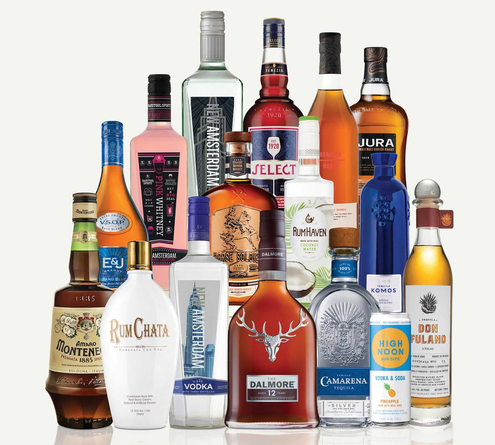

- TYPE
- Consumer Insights
- TEAM CREDIT
- Akash Khanikor, Himanshu Kaushik, Maxwell Kemats, Cara Baah-Binney, Caroline Berger
- DATE
- Summer 2023
The Future of Wine with EJ Gallo
OVERVIEW
In summer of 2023 EJ Gallo Winery approached the NEXT Innovation Scholars with a simple ask: we want you to find the future of wine for LDA consumers. The catch? They need it in two weeks. What followed was 50 user interviews, hours of digging through insights, and a very late night putting together a final presentation. The team presented to EJ Gallo at their headquarters in Modesto, California, then ran a workshop with their team.
The Brief
In two weeks:
- Collect relevant data and extract valuable insights around wine consumption amongst the Legal Drinking Age (LDA) [21–25] consumer
- Explore motivations, barriers/tensions, preferences, and decision-making factors that influence LDA
- Interview at least 50 LDA consumers of a diverse background

The Presentation
The team had the opportunity to present our work at EJ Gallo's headquarters in Modesto, California. We then ran a workshop with EJ Gallo employees to create ideas from our insights.
Our insights were divided into four main groups:
- The Current State of LDA Drinking
- LDA Consumption & Perception of Wine
- Barriers to the Wine Category
- LDA Consumer Desires
INSIGHT 01
The Current State of LDA Drinking
INSIGHT 02
LDA Consumption & Perception of Wine
INSIGHT 03
Barriers to the Wine Category
INSIGHT 04